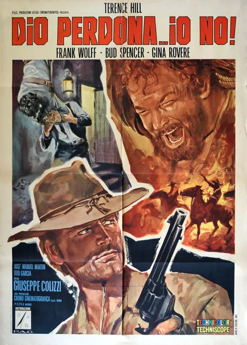

1967 · 24 tracce
Musiche di Carlo Rustichelli.
Elenco dell’edizione indicata; comprende versioni discografiche e alternative. Non costituisce un elenco certificato di ogni inserto musicale nel montaggio del film.
Gli elenchi documentano le edizioni pubblicate; la presenza di ciascuna traccia nel montaggio del film non è certificata.
Brani e ascolti
- 01
Dies irae
2:01 - 02
Arrivo alla stazione e strage sul treno
1:27 - 03
Paesaggio di notte (partita a poker)
4:50 - 04
Cavalcando al tramonto
1:23 - 05
Rose
4:40 - 06
L'Incendio
1:42 - 07
Torride praterie
1:18 - 08
Rose (2° versione)
2:20 - 09
Il funerale
3:09 - 10
Le spartizioni
2:32 - 11
Passo dietro passo
2:57 - 12
Bill Sant'Antonio
2:10 - 13
Il nuovo comandante
3:10 - 14
Appostamento
1:45 - 15
Senza tregua
1:20 - 16
Il cane, il gatto, la volpe
2:26 - 17
Appostamento (2° versione)
2:41 - 18
Gatto in agguato
1:17 - 19
Senza tregua (prigioniero)
1:23 - 20
Prigioniero
1:10 - 21
Affari sporchi
2:32 - 22
Attesa nel pericolo
1:38 - 23
Confronto finale
2:22 - 24
End Titles
2:33
Fonti e riferimenti
- Scheda del film e creditiConsultata il 3 ottobre 2026.
- Edizione e lista delle tracceConsultata il 3 ottobre 2026.
- Edizione digitale e ascoltiConsultata il 3 ottobre 2026.
- Locandina — Dio perdona... io no!Consultata il 3 ottobre 2026.